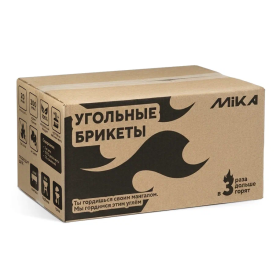

Своя марка · розница
MIKA
Главный бренд СТМ. Если покупатель спрашивает «что у вас своё / посоветуйте нормальное недорого» — чаще начинайте с MIKA.

По материалам сайта «У Михалыча»: марка относительно новая, но уже с хорошими отзывами. Баланс качество + доступная цена + широкий ассортимент. Производство — на известных заводах России и Китая, контроль качества, низкий процент брака, сервис.
Что сказать покупателю
- «Это наша собственная марка — без переплаты за громкое имя».
- «Можно собрать всё нужное в одной линейке».
- «Подходит и для дома/дачи, и для рабочих задач».



Ассортимент (что лежит в зале)
- Насосы — вибрационные (верхний/нижний забор), скважинные, дренажные, станции, поверхностные.
- Бетоносмесители MIKA — рядом смотрите также TORRA.
- Пены и клей-пена — бытовая и профессиональная; шпаргалка выбора — ниже по смыслу: щели → бытовая, двери/окна → проф, огонь → огнестойкая.
- Масла — 2T/4T, цепь, компрессор, ТАД-17 (не путать типы!).
- Растворители и подготовка — уайт-спирит, 646, 650, ацетон, обезжириватель, грунтовка, огнебио.
- Тачки, мембраны/плёнки, метизы, биты, диски, станки, рулетки/ножи, теплоноситель, лопаты, шланги, электроды, автохимия.
- Сад — катушки и леска для триммера.
Каталог на сайте: gvozditut.ru/brands/mika
Частые вопросы в зале
- «Чем лучше именитого бренда?» — не «лучше имени», а «то же рабочее качество без переплаты».
- «Есть гарантия/сервис?» — да, по правилам сети; при необходимости направляем в сервис.
- «2T или 4T масло?» — смотрим технику: двухтакт / четырёхтакт, не взаимозаменяемы.